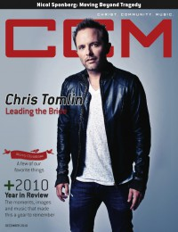

CCM Digital, Dec 2010
| Cover |
|---|
|  |
 Online Exclusively Online Exclusively |
| Writers in this Issue |
| Argyrakis, Andy Cartwright, Grace C. Conner, Matt Greer, Andrew Hoernschemeyer, Emily Jackson, Tom Lusk, Caroline |
Chris Tomlin
Cover Feature:- "Leading the Bride" by Caroline LuskChris Tomlin on his marriage
- "Christmas 2010: A Few of Our Favorite Things"Christmas releases and artist comments about Christmas
- "Rockin' the faith-based road in 2010" by Andy Argyrakisreview of 2010 in Christian music
- "2010: Under the Radar" by Matt Connerlesser-known acts in 2010
- "Bringing Revival" by Emily Hoernschemeyer
- The Brooklyn Tabernacle Choir by Emily Hoernschemeyer
- Wilson Phillips by Andrew Greer
- Holly Starr by Matt Conner
- CeCe Winans by Andrew Greer
- As They Sleep by Andy Argyrakis
- Eliot Sloan by Caroline Lusk
- Sleeping at Last by Andy Argyrakis
- Smokie Norful by Andrew Greer
- "Dishes on Their Rig of Choice" by Caroline Lusk
- "The Consummate Storyteller"
- "Exceed Their Expectations" by Tom Jackson
- various artists - The Essential Christmas Collection by Grace C. Cartwright
- Dave Barnes - Very Merry Christmas by Matt Conner
- Wilson Phillips - Christmas in Harmony by Matt Conner
- Phil Keaggy - Welcome Inn by Matt Conner
- Jesus Culture - Come Away by Andrew Greer
- Brian Courtney Wilson - Just Love [Deluxe Edition] by Andrew Greer
- Kevin Levar - Let's Come Together [Deluxe Edition] by Andy Argyrakis
- various artists - WOW Hits 2011 by Andrew Greer
- Brooke Fraser - Flags by Matt Conner
- Josh White - Anchor by Grace C. Cartwright
- As They Sleep - Dynasty by Andrew Greer
- Yancy - Stars, Guitars & Megaphone Dreams by Andy Argyrakis
- Philmont - The Transition EP by Grace C. Cartwright
- Ryan Long - Arise by Andy Argyrakis
- Emily Deloach - The Lucky Ones EP by Andrew Greer
- Justin Zigenis - Maze by Grace C. Cartwright
- Shonlock - Where Never Begins by Matt Conner
- various artists - Gotta Have Gospel 8 by Andrew Greer
- Scratch Track - Sirens by Andy Argyrakis
- Two Fires - Burning Bright by Andy Argyrakis
- Mike Farris - The Night Cumberland Came Alive by Andy Argyrakis
- Alter Bridge - AB III by Matt Conner
- "Saved My Life Tour, Chicago Theatre, Chicago, IL" by Andy Argyrakis
- "Nicol Sponberg Reflects" by Caroline Lusk
Relevant Links
For more information about CCM Digital visit .This issue is available exclusively online.
© 2011 CMnexus. Last updated September 2019. Contact: editor -AT- cmnexus -DØT- org About